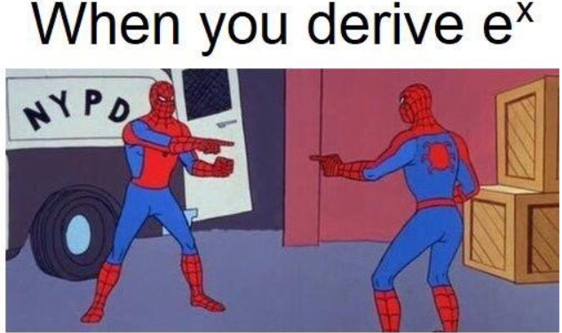
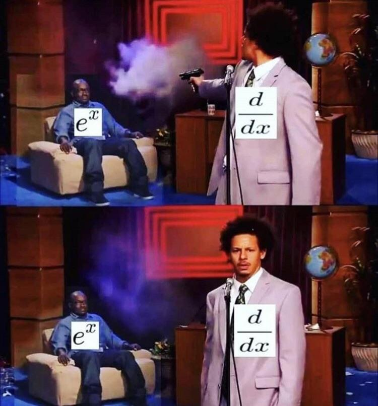
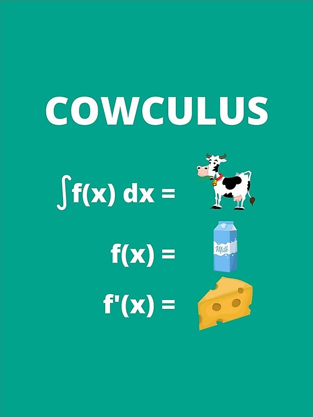

They say that \text{comedy} = \text{time} + \text{tragedy}. I would argue that this is not neccisarily true because then a dinosaur stubbing its toe would be insanely funny, but, y’know, it’s not. (I didn’t come up with this analogy, but I can’t remember for the life of me where I heard it from, sorry). Finding a more apt equation for comedy is a blog post for another time, but this equation especially fails in the context of math jokes. Why? Because the more math you do, the more obvious results become and therefore the less funny a joke you make out of them is. For example, when you start calculus, a teacher, trying to be hip with the kids, or whatever, will inevitably show you some memes such as:  
Which like, I guess are kind of funny at first? But ultimately anyone who’s even done a little bit of math has seen the fact that \frac{d}{dx} e^x = e^x so many times that the joke doesn’t really land anymore. And don’t even get me started on garbage like
I’m sure whoever made it had good intentions, but the implication that you can differentiate a cow to get milk is misleading at best and malicious at worst. If anything, a more accurate joke would be that differentiating a cow is leather, but that’s a bit morbid so I can see why they decided to not go with that. In any case, math jokes, much like the derivative of a cow, spoil with age. However, there is one joke, which is by far the worst offender.